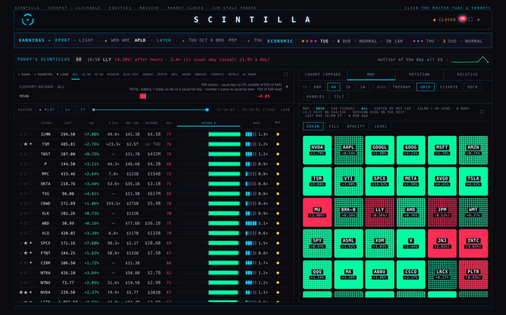
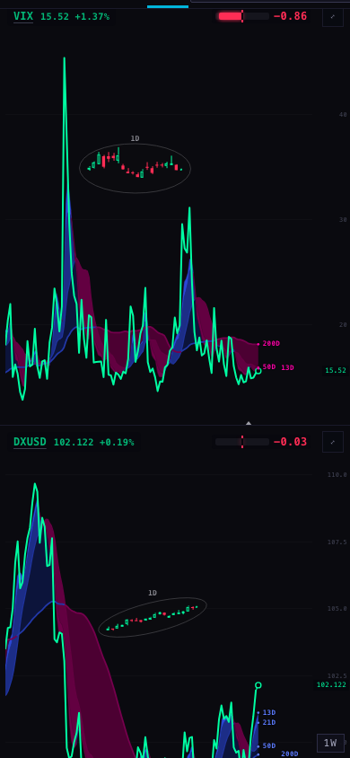
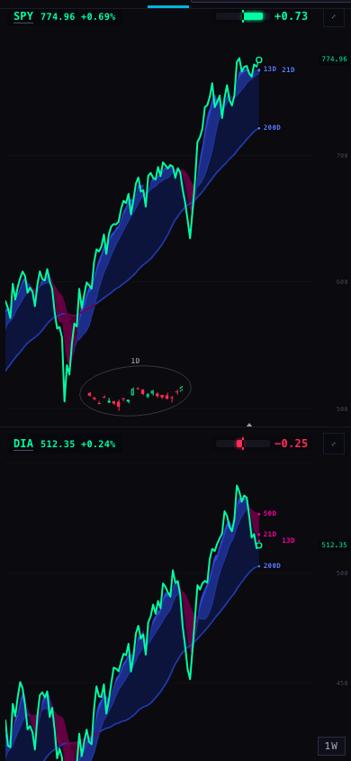

C2 · the market calendar and four small leftovers
5 Oct 2026, evening · Linear SCI-57 and SCI-71 · nothing on this page is live: one staged database file, two branches, measurements
- The calendar already has 2027. It was loaded on 29 Sep and never ticked off. Every 2027 day matches the exchange's own page. The real gap is 2028; that year is staged and waits for the coordinator.
- The two tests that failed after midnight were already fixed the same evening they were noted. A sweep found one more test with the same kind of fault (it failed between 3 and 4 in the morning, New York time). Fixed on a branch.
- The ALL map's colours are no longer 13 seconds late. Today they land about 4 seconds after the rows on the live Hub (7 on a cold server). A small change on a branch brings that to under a second in the test rig.
- The phone and the iMac items are not small fixes. Each is stated below with what it needs.
The ALL map with its colours in · branch copy · 1680 wide

The Station on a phone · 390 × 844 · after a page change


One row per item
| What | Measured before | Fix | Measured after | What the coordinator applies |
|---|---|---|---|---|
| 1 · Market calendar SCI-57: "has no 2027 days" |
Table market_calendar: one row per calendar day, 9,131 rows, 1 Jan 2003 → 31 Dec 2027, no day missing. 2027 holds 251 trading days, 10 holidays and one early close (26 Nov, 13:00), all equal to the exchange's published list. So the item was already done on 29 Sep at 23:22 ET; only the ledger still said otherwise.Who reads it: the nightly "rebuild thin dates" job (database job 219, hourly from 04:11 to 13:11 UTC) uses it to skip closed days, and the "session gaps" routine uses it when run by hand. No Hub page, Station page or provider service reads it. |
None needed for 2027. The next cliff is 1 Jan 2028, so 2028 is staged: 366 days, from the same exchange page, as one file that only adds rows, with its undo file. | Tried on a throw-away copy of the table (not the real database): 366 days added = 251 trading days (249 full, 2 early closes on 3 Jul and 24 Nov) + 106 weekend days + 9 holidays. Running it twice adds nothing the second time. The undo puts the table back exactly. | Apply staged/c2-calendar/20261005_c2_market_calendar_2028.sql; write the undo (…_2028_ROLLBACK.sql) in the rollback log first; read back 366 / 251 / 106 / 9 / 2. Close SCI-57. |
| 2 · Provider tests that fail at night SCI-71 |
The two named on 29 Sep (chart session extension; Geiger wire contract) were fixed that same evening, at 20:37 ET, and are in the live code line. Today: 803 of 803 pass by day. Running the whole suite with the clock moved (80 night-time runs over four days, plus every half hour across a day and a half) found one more: a health-check test fails on a weekday between 03:00 and 04:00 New York time: 802 of 803. Its clock assumption: it looks for the next 04:00 market open and insists the quiet period before it is over an hour long. Started inside that last hour, it is not. |
The test now looks for an open at least 61 minutes ahead, so its own assumption holds at any hour. Test file only; no service code changed. | 803 of 803 at the real time and at nine simulated times, including the seconds either side of 04:00 and the night the clocks change (1 Nov). | Merge provider/c2-tests-20261005 into the provider line whenever the next provider change goes in. Nothing to deploy: it is a test. |
| 3 · Phone keeps the old Station page change SCI-71 |
What it means: on the big screen a Station page change now dissolves (the next page is drawn out of sight, then fades in). A phone stacks the charts and was deliberately left on the older way, where the panes empty and then fill. Reproduced today at 390 × 844, all 21 pages in rotation order: 19 of 21 changes leave a pane empty for more than a tenth of a second; typical 0.38 s, worst 0.61 s; every page complete in about half a second. On 29 Sep the worst was 4.7 s, so the faster chart server has already taken most of the sting out. |
None. This is not a page fault: the phone layout does not use the dissolve machinery at all. Making it dissolve is a piece of Station work of its own. | — | Nothing. One call for Alan below. |
| 4 · iMac load SCI-71 |
The 29 Sep note was "iMac processor load not measured" for the Station rotation. On 3 Oct the H10 lane measured the Hub's board on this MacBook slowed six times, at the iMac's screen size: scrolling ALL went from 7.9 to 24.6 pictures a second on its branch. | No work, by the brief. | — | What remains: (a) H10's branch hub/h10-imac-board-20261003 is still not on the live Hub; it waits for Alan's yes. (b) Nothing has ever been measured on the iMac itself, for the Hub or the Station. That needs the iMac: it cannot be reached from this MacBook, and the standing rule forbids touching it. That contradiction is already with Alan as SCI-47. |
| 5 · ALL map colours late SCI-71: "13 s late" |
Live Hub today, from clicking ALL: rows on screen after 0.2 s; colours 7.0 s, 4.2 s and 1.1 s after the rows in three runs (the first with a cold server). So 13 s is no longer true: since 1 Oct the page asks for about 70 names per request instead of one. The cause of what is left: the 546 names go out as 8 requests, one after another, and the colours wait for the last. The time is the sum of the eight. Test rig, 9 runs: 1.65 s median (1.0–3.6). |
Up to four of the eight requests are out at once. Same requests, same answers, same single repaint. The old database path keeps its one-at-a-time order. | Test rig, 9 runs alternating with the "before" runs: 0.69 s median (0.5–2.4). 544 of 546 names coloured, as before. Hub tests: the same 7 failures as the live line, plus 4 new tests that pass. | Show Alan; if he agrees, merge hub/c2-leftovers-20261005 (one change in index.html, its trial copy, one test file). Then measure once on the live Hub with a cold server. |
What could be wrong
- Map timing. The before-and-after numbers come from a test rig on this MacBook with a warm chart server, not from the live Hub. The live "cold" figure (7 s) was seen once. Four requests at once should cut it to roughly a quarter, but that is arithmetic, not a measurement.
- Calendar readers. I could not read the database's own routines from here (the saved link to the database is gone, and the public key cannot see them). The two readers named are from the 28 Sep records, not from a fresh look.
- One old calendar day looks wrong: 3 Jul 2025 is stored as a full day; the exchange closed at 13:00 that day. It is in the past and changing it is an overwrite, so I left it.
- Night tests. The sweep covered the night hours of four days. A test that fails only on some other date (a month end, a holiday) would not have shown.
What I did not do
- Nothing was applied to the database, nothing deployed, no schedule changed.
- No Station change, so no Station branch was pushed.
- No update to Linear: SCI-57 and SCI-71 still read "Todo".
- The iMac was not touched.
PAGE SPECS
Calendar: read with the Hub's public key on 5 Oct 2026 (evidence/calendar-live-read.json). Source for the days: NYSE "Holidays & Trading Hours", https://www.nyse.com/markets/hours-calendars, read the same day. 2028 closures: 17 Jan, 21 Feb, 14 Apr, 29 May, 19 Jun, 4 Jul, 4 Sep, 23 Nov, 25 Dec; New Year's Day 2028 is a Saturday and the exchange lists no closure for it. Dry run: evidence/calendar-dryrun.mjs and .json (PGlite, a PostgreSQL that runs inside node, loaded with the 9,131 live rows). The staged file assumes the table's key is the day; if it is not, the file fails as a whole and adds nothing.
Provider: branch provider/c2-tests-20261005 from origin/provider/p9-prevclose-hold-20261002. The earlier fix is commit 2cce315. The moved clock is evidence/provider-clock/shiftclock.mjs (loaded with NODE_OPTIONS=--import); the hits are in sweep-before.txt. One hit at 02:17 New York time on 12 Oct did not repeat in three re-runs while the machine was busy; the 03:00–04:00 hits repeat every time.
Phone: the 29 Sep rotation rig (deliverables/20260929/station-rotation/harness/rotation.mjs in the Station repository) run against origin/station/merge-20260923 at 390 × 844, one lap, 21 page changes; table in evidence/phone-390/phone-390-page-changes.txt. The rig refused and counted 13 non-read requests, all from the embedded YouTube players.
Map: rig evidence/map/mapcolours.mjs, headless, 1680 × 1050. "Colours in" is the moment the page holds the 4-hour result for the list on screen. Live runs: live-before.json. Rig runs serve the page from this MacBook and pass the chart server's answers through with the Hub's address, because that server only answers the Hub: local-before-after.json. No write request left any test browser. The change is in l0MapLoad (L0_MAP_PARALLEL = 4). Rules it sits beside, checked together: the page's own limit of 12 map reads at once (each request still takes one of those places), the wait behind a company chart (unchanged; it applies only when the one-request route is not offered), the 90-second refresh of the map, and the chart server's limit of 16 reads inside one request (so at most 64 at once from one Hub, against 800 names it accepts in a single request). Test: tests/c2-map-parallel.test.mjs. Hub suite: live line 1,876 tests, 7 fail; this branch 1,880 tests, the same 7 fail.